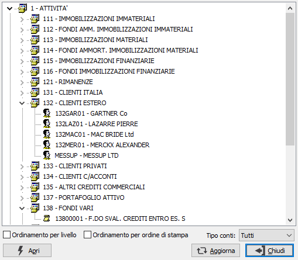

Visualizzazione piano dei conti
Il programma consente di visualizzare in formato grafico la struttura del piano dei conti, permettendo l'esplosione e la manutenzione dei singoli mastri e conti.

Agendo con il mouse sul segno "+" sono visualizzati i sottoconti relativi al mastro principale. Il tasto "Apri" consente di accedere alla manutenzione del mastro o del conto, sia esso cliente, fornitore o sottoconto; il tasto "Aggiorna" consente di aggiornare la visualizzazione nel caso in cui altri utenti stiano inserendo altri mastri o sottoconti. Il tasto "Chiude" termina l'esecuzione del programma.
ORDINAMENTO PER LIVELLO: definisce se si visualizzare il piano dei conti ordinato per livello.
ORDINAMENTO PER ORDINE DI STAMPA: definisce se si desidera visualizzare il piano dei conti ordinato per ordine di stampa.
TIPO CONTI: consente di selezionare se visualizzare tutti conti (Tutti), solo i codici obsoleti (Obsoleti) oppure solo quelli attivi (Attivi).